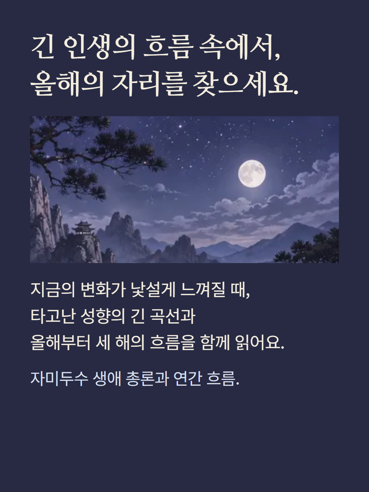
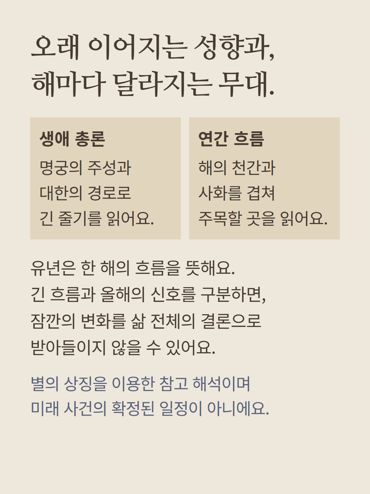
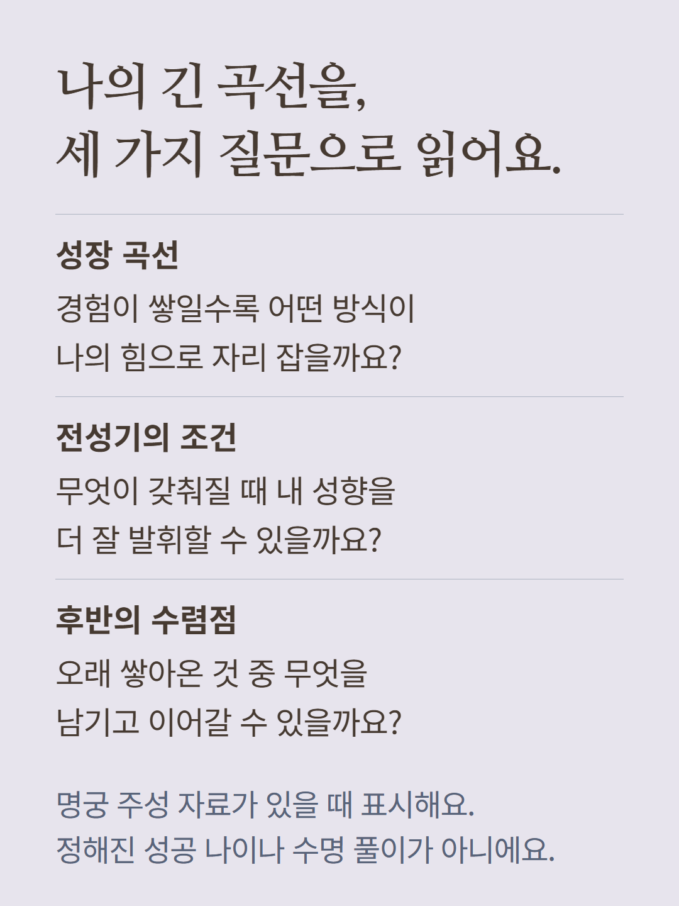
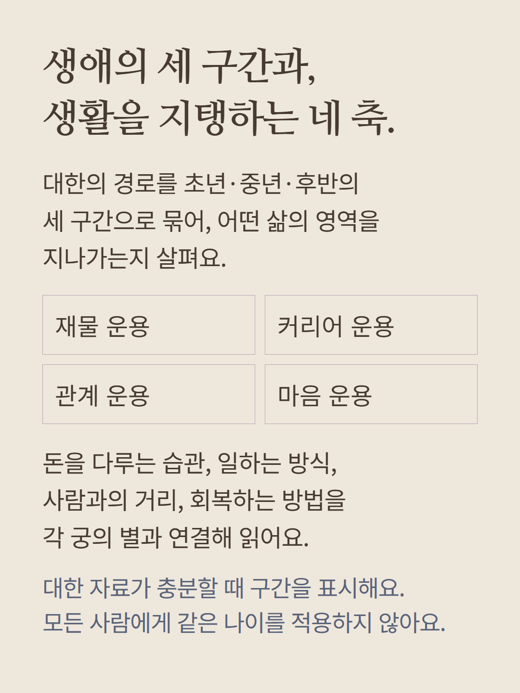
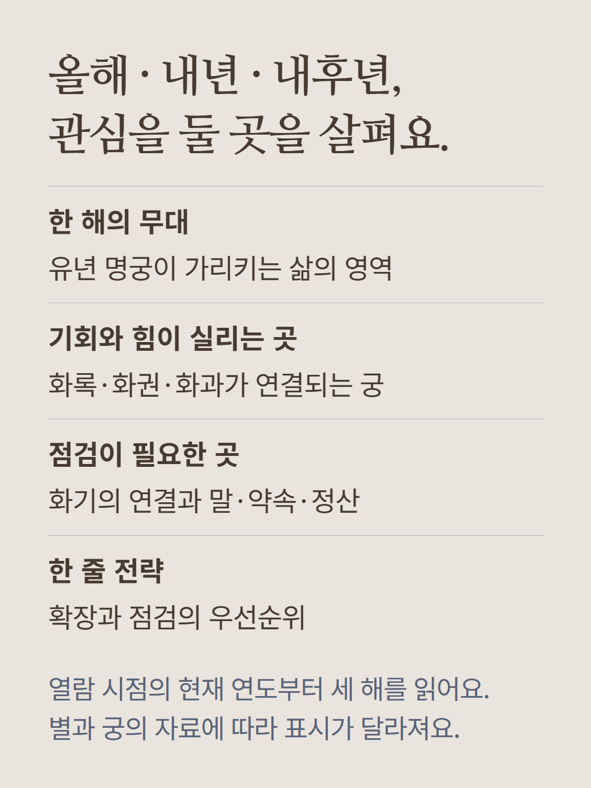
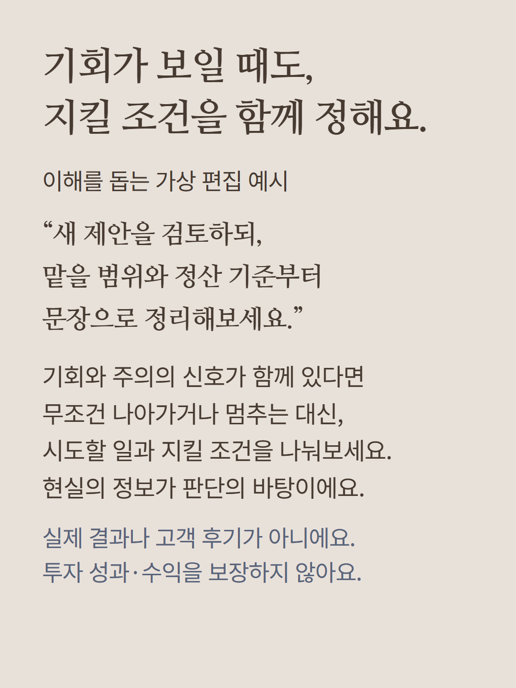
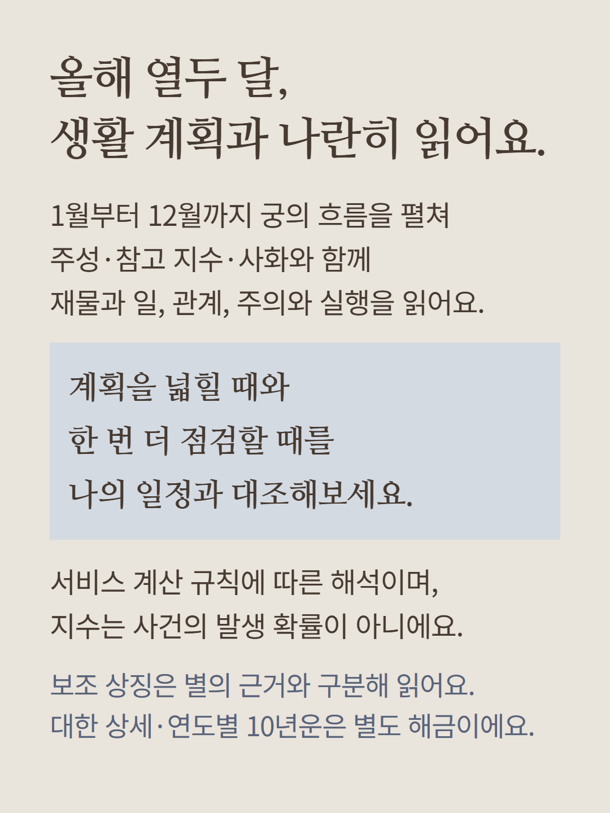
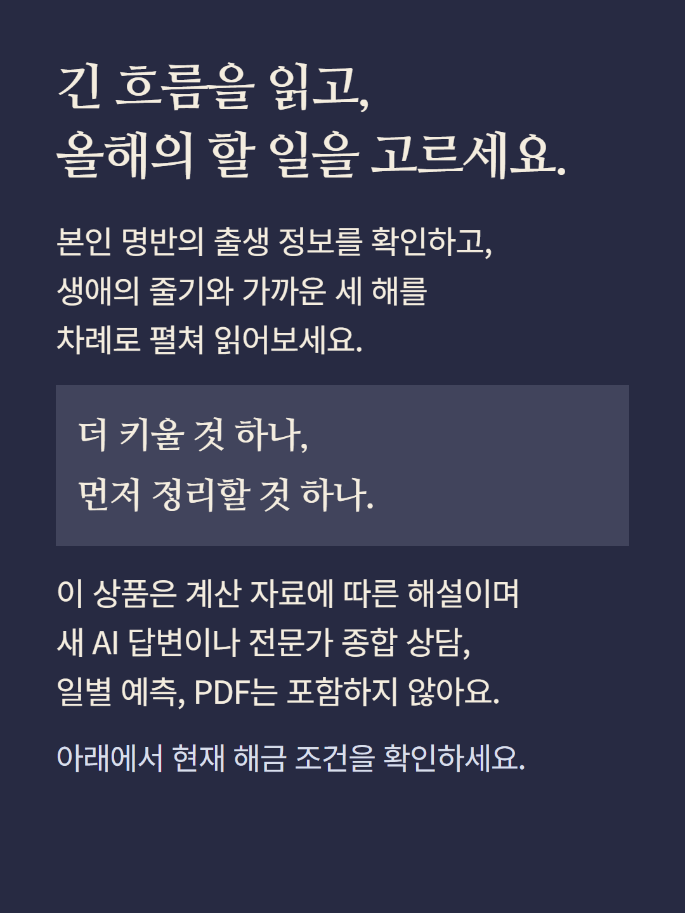

본인 명반의 생애 서사·기존 총론·연간 흐름·3개년 정밀 해설을 여는 상품입니다. 명궁 주성 자료가 있을 때 성장 곡선·전성기 조건·후반 수렴점을 표시하고,대한 자료가 충분하면 초년1~3대한·중년4~7대한·후반8대한 이후의 경로를 묶습니다. 재물·커리어·관계·마음의 운용 원칙,올해1~12월의 주성·참고지수·사화·재물일·관계·주의·실행과 보조상징,현재 연도부터 올해·내년·내후년의 유년 무대와 사화의 기회·힘·주의 및 한 줄 전략을 제공합니다. 자료에 따라 항목은 달라지며 특정 나이의 성공·미래사건·수명·수익을 보장하지 않습니다. 대한 전체12단계 상세 및 별도10년운,새 AI답변·전문가상담·일별 예측·PDF는 별도 범위이며 포함하지 않습니다. 예시는 가상 편집으로 실제 결과·후기가 아니며 이미지는 분위기 연출입니다. 현재 해금 조건을 확인해 주세요.